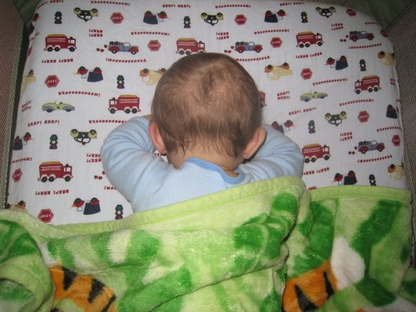
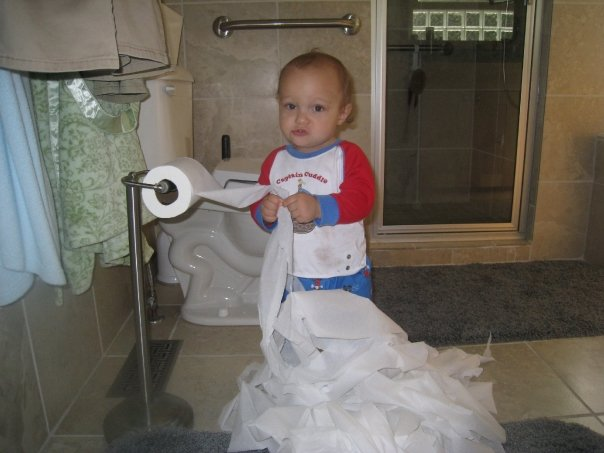

Let us Begin

He was born a mere human, destined for the concrete jungle of human life.
But this world was not for him. Though only a few minutes old he realized that indeed he
should have been born a monkey. With this revelation Simon spoke to the world through
the only way he knew how. His butt. He proceeded to poop on his mother in defiance of this
world he would be forced in.
Revelation

It did not take long to break him. It was a cool morning, frost had arrived. He was longing to
spend time in the outdoors. Feel the air across his cheek and touch the grass beneath his feet.
Alas, this would not happen on this day, his 6 month anniversary of birth. A blonde woman approached.
She was holding a horrid band that looked like the garbage of Brittney Spears and proceeded
to place it on his head. Who was she? To crown the jungle king with this hideous crown? It was on this day
that Simon had decided he must escape this treacherous place and find his place among his peers.
He would Plan His Escape!

The Great Escape

Alas! He was almost free. His train led him to a patch of flowers. He would let the petals fall and fly
away and follow their directions. The petals slowly fell off the flower and Simon ran as fast as
could to see where they would take him. Would they lead him to his people? It was when he reached
this magical forrest that he finally felt free.

I'm Free!!! I'm Free!!! He yelled in an undiscernable language we can only assume is english.
The Chair Prison

He had not travelled far enough. The blonde witch of the castle had found him frolicking in the
woods and had returned him to his chair prison. What was this thing? A terrible jail!
REVENGE

You will not get away with this or this hat upon my head!

His revenge would be swift. His revenge would destroy. His revenge would inconvenience!
Time Passed
Who am I? Some fool with tacky headgear? What has this world done to me? LOOK AT ME?!?!

The Time Is Now

My gear is on, my clothes are off! I will no longer be your hat slave!
He was down to his underwear. Ready to go running naked into the jungle that was his home. The home
of all the other monkeys that lived on this world. Forced to be a slave to the blond lady's wishes
of crazy headwear dressup. He now knew this was no ordinary blonde but his grandmother.
Maybe he was wrong? She did take care of him. She hugged him, he liked that. She kissed him, he liked that.
She said OY OY OY a lot! He did NOT like that. But for the most part she was OK.
Wait! What is this furry beast you bestow upon me oh blonde one?

The blonde lady spoke and said Trooper, he will protect you.
I have found my furry friend. My beast of beasts! I can not abandon him. He is part of my pack now.
I will stay and protect you oh blonde one. Oh grandma